symbols.
In order to draw the electric circuit diagrams of an electronic system or subsystem, one has to identify all the basic elements. These elements and their connections are then represented graphically by different symbols.
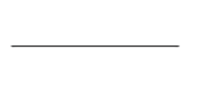
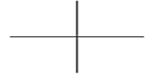
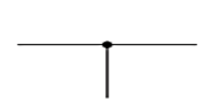
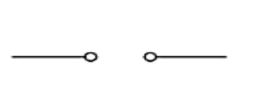
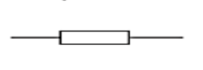
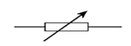
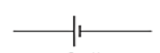
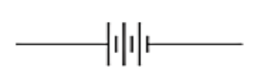
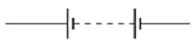
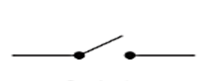
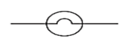
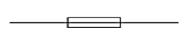
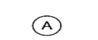
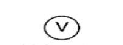